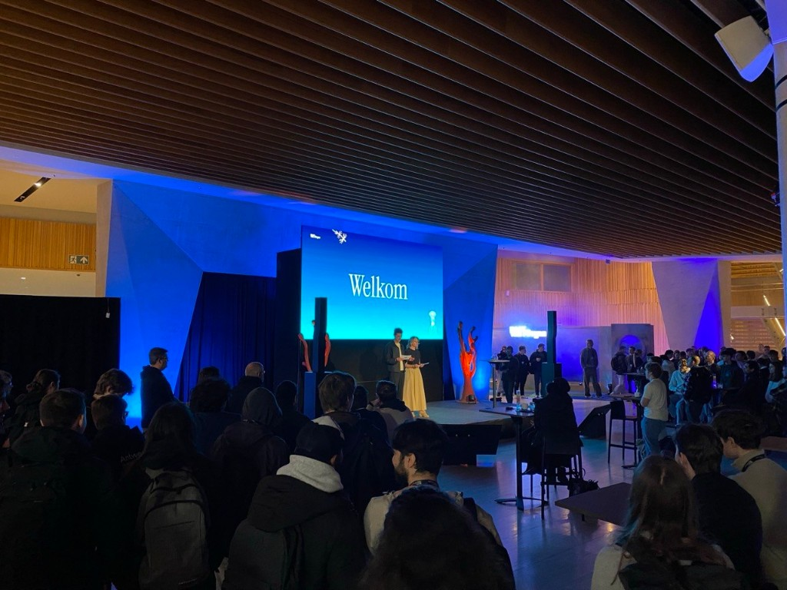
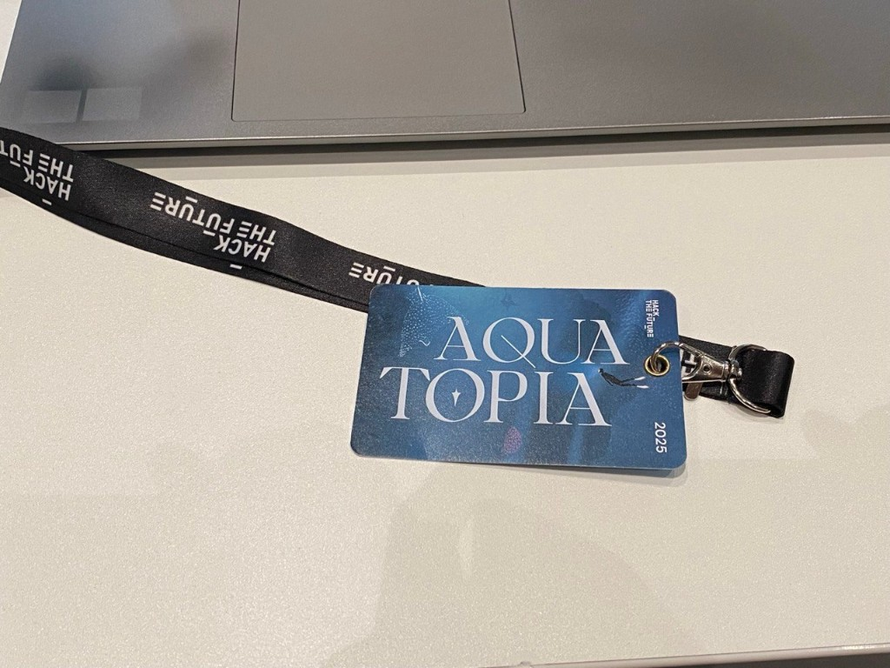
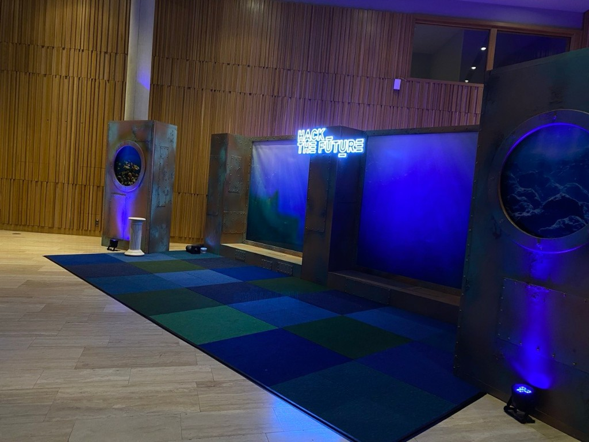

Hack The Future 2025 — Aquatopia

Opening night — more than a thousand students in one hall.
I had an amazing time at Hack The Future 2025 in Antwerp this week, diving into the Aquatopia-themed hackathon together with more than 1,000 students from different IT and creative backgrounds. The scale alone sets the tone: this is not a classroom exercise with forgiving deadlines — it is production pressure, sponsor energy, and teams that have to ship before the clock runs out.

Badge for the Aquatopia edition — Hack The Future 2025.
The challenge
My challenge was all about rescuing a broken backend server and getting it fully operational again so it could communicate with OpenAI and identify fish species from photos. On paper that sounds playful; in practice it was a chain of failures waiting to happen: dead services, misconfigured endpoints, API keys, image pipelines, and model responses that only work when every layer is healthy.
It was a great mix of debugging, backend engineering, and applied AI. We traced logs, restored connectivity, and tested uploads until the stack could classify an image end to end. Under time pressure you feel how much security and reliability matter — not as slide bullets, but as “can we trust this call right now?”
Reliability under pressure
A very real reminder: observability, error handling, and sane defaults decide whether a demo survives a jury walk-by. When OpenAI sits in the middle of your flow, you also inherit rate limits, latency, and data-handling questions — especially with user-submitted photos. Aquatopia made that concrete: one broken container or wrong env var and your “fish ID” story stops cold.

The Aquatopia set — themed stages and serious engineering in the same building.
Beyond the code
Beyond the challenge itself, the atmosphere at the event was fantastic — loud, focused, and genuinely collaborative. You hear other teams argue about architecture in one row and UX in the next. Huge thanks to all organisers and companies that showed up with challenges, mentors, and hardware that made HTF25 feel like a professional field trip, not a school trip.
I left Antwerp tired but energised: proof that I enjoy the messy middle between “it is broken” and “it works,” and that hackathons are still one of the fastest ways to learn what holds up when reality does not wait for your README.